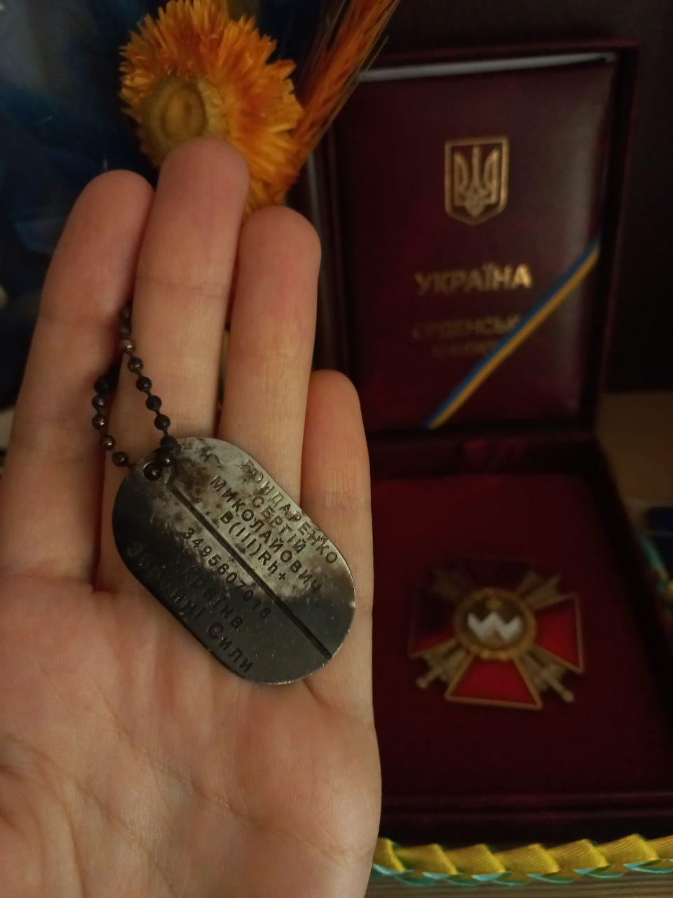

ОСТАННІЙ ПОЛІТ

У березні 2022 року на початку повномасштабного вторгнення в Україну територія між населеними пунктами Михайлівка та Архангельське Баштанського району Миколаївської області стала місцем запеклих повітряних боїв та оборонних дій Збройних сил України проти російських окупантів, які намагалися прорватися через Миколаївщину.
Того дня окупантами було збито два українські вертольоти Мі-8 18-ї обр АА СВ ЗСУ внаслідок чого загинули шестеро військовослужбовців: Сергій Бондаренко, Олександр Чуйко, Ігор Пазич, Владислав Горбань, Костянтин Зебницький, Ігор Туревич.
17 березня 2022 року з ними прощалися у Свято-Успенському соборі Полтави.
1 екіпаж: Чуйко, Бондаренко, Пазич
2 екіпаж: Горбань, Зебницький, Туревич
Ось як описують події тих страшних днів сім’я Сергія:
Коли братик загинув він дуже часто снився мені, та й усім рідним. Мені здається, подібне трапляється з усіма, хто пережив втрату дійсно близької людини. Напевно, коли ти дуже сильно за кимось сумуєш, то мозок рятує тебе теплими спогадами про тих, хто уже не з нами.
Пам’ятаю один сон, який досить часто снився усім членам родини, у ньому братик приходив і показував жетон і одного разу навіть промовив фразу, яку усі запам’ятали: «Як отримаєте назад мій жетон, тоді й остаточно впевнитися, що мене більше не має».
Для нас це здавалося абсурдом, адже жетон він дуже рідко одягав, а коли батько опізнавав тіло, точніше те, що залишилося від братикового згорілого тіла, то жетону, звісно, на ньому не було. Та й взагалі, особистих речей як таких, після бою не залишилося, адже нам сказали, що гелікоптер вибухнув і логічно було, що усі речі просто поплавилися.
Пройшло 15 місяців, від дня загибелі братика. Ми про ті сни й не згадувати, але у липні тато отримує дзвінок від батька одного із пілотів (вертолітника, який був у гелікоптері із моїм братом), він передав нам телефонний номер людей, які нас розшукували.
Виявляється, коли фермери прибирали поле і готували його до посівного сезону, то на своїй землі вони знайшли речі Сергія, а саме: іменний жетон; ключі від квартири (вони були не типовими й тому я одразу їх впізнала); складний ніж який був його дарунком від нашого тата.
Саме по даних із жетону старенький дідусь (батько власника поля) та його внучка, вели активний пошук родини загиблого воїна - Бондаренка Сергія. Вийти на нас, допоміг нещодавній пост у фейсбуці, про відкриття пам’ятної дошки на честь брата, там були усі дані про нього, його бойовий шлях та місце загибелі і все це точно збігалося із тим, кого шукали селяни. На жаль, вони залишили повідомлення під постами в різних групах де була інформація про Сергія, але ми мали настільки пригнічений стан, що майже не заходили у мережу інтернет та були не соціально активними, а тому й не помітили їхні повідомлення.
Домовившись про зустріч, ми поїхали на місце останнього бою брата та його побратимів. Найпершим вийшов дідусь, який і шукав нас, здавалося з усіх присутніх котрі вийшли нас зустрічати, йому було найважче, він намагався розв’язати клуночок, але руки тремтіли і все ж він не дозволяв аби йому у цьому хтось допомагав, для нього дуже важливо було передати речі особисто. У цей час, внучка сказала: «Коли ми з дідусем знайшли жетон і особисті речі вашого сина, дідусь сказав, що це найцінніша знахідка для рідних загиблого і її обов’язково потрібно зберегти та передати».
Коли клуночок розв’язали, там було усе Сергійкове, і десь в той момент й зникли всі ілюзії про те, що можливо трапилася помилка, що тато помилився під час впізнання, а аналіз ДНК був хибним… Чомусь, саме знайдений медальйон Сергійка дав нам гостре відчуття реальності, нам більше не було як заперечувати чи відхиляти факт його загибелі.
В той момент усі плакали. Це було дуже боляче і водночас щемливо, тому що люди які прийшли на зустріч з нами навперебій дякували за сина, за те, що він та його побратими боронили їх, адже регулярних військ поруч із селами у той час не було, єдиним їх захистом стали самі мешканці та представники авіації, які бомбили й зупиняли ворожі колони.
Селяни розповідали як вони боролися за тіла наших рідних. Коли вони побачили як підбили другий гелікоптер і він пішов на зниження, то вони одразу поїхали в сторону полів. Адже перед цим, їм саме так вдалося спасти життя вертолітників іншої бригади, перехопивши їх у машину і сховавши від російської армії. Розуміючи, що перший гелікоптер вибухнув у повітрі, а другий з підбитим хвостом врізався у землю, вони прямували саме в сторону другого. У цьому гелікоптері й був Сергій з його побратимами: Олександром Чуйко та Ігорем Пазичем.
Але, доки вони їхали, буряти обступили гелікоптери БТРами з двох сторін і пустили автоматну чергу в повітря. Люди відступили, тому, що навколо у посадках вони побачили сховану техніку. З їх слів, це була засідка саме на пілотів.
На хлопців очевидно полювали, ще після Чорнобаївки та 1-го березня, коли вони бомбили колони російської техніки разом із військовими та ТРО Миколаївщини, а також усі їх лютневі та березневі вильоти, яких щодень було від 3-х до 5-ти бойових вильотів. Добряче наші хлопці тоді потріпали русню!
Коли люди відступили, то почули постріли по гелікоптерах та пілотах. Деякі очевидці стверджують, що у цьому екіпажі ймовірно були живі, але їх розстріляли на місці (вони не бачили цього, але чули крики та перестрілку). Згодом, саме по огляду тіл, можна було зрозуміти, що ймовірність їх припущення висока.
Ненависть російських найманців була така, що вони не те, що в живих нікого з екіпажу не залишили, вони накидали на половину обличчя ганчірки, залили паливом та підпалили, таке вони зробили із Сергієм та його тілом, а всі особисті речі, по яким можна було впізнати - забрали. Лише дещо, що злетіло чи загубилося, було повернуто рідним воїнів.
Врешті, 11 березня, коли було посилене підкріплення і почалися бої регулярної армії із рашистами, буряти почали відступати, а селяни та волонтери встигли приїхати на місця падіння вертольотів на машині й в умовах підвищеної небезпеки, швидко забрати тіла загиблих, які згодом були передані до моргу, а після - рідним.
Все ж, пілоти у день загибелі, зуміли добряче побомбити ворога. За словами очевидців, це також врятувало мешканців прибічних селищ, адже буряти, замість мародерства та знущання з людей, як то кажуть «зализували свої рани».
Волонтери та сім’я аграрія вирішили зробити пам’ятник на місці загибелі. Вони абсолютно відмовилися від фінансування із нашого боку. Адже, цитую: «Нащо Ви так? Ми ж віддячити хочемо. Ваш син та його побратими поклали за нас життя! Ми хочемо поставити пам’ятник саме біля дороги, щоб кожен, хто проїжджатиме біля цього поля де вони загинули, бачили фото воїнів, зупинилися, поклали квіти, чи про себе подякували, бо висока ціна за наше життя була сплачена…».
Тому нехай їхній вічний політ буде тепер тихим, спокійним, та пам’ятним… Пам’ятним, як Героїв не тільки для очевидців Миколаївщини й Херсонщини, але й для усієї України!